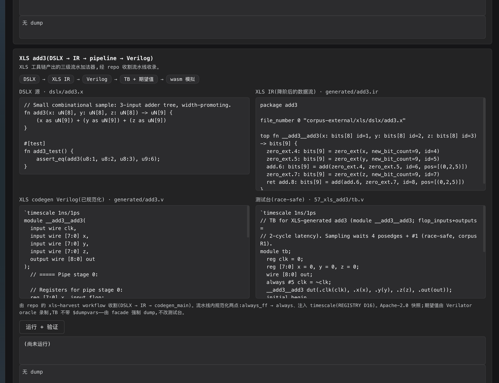
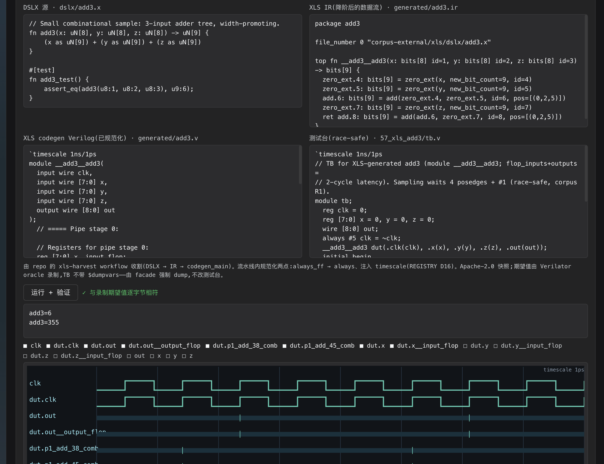
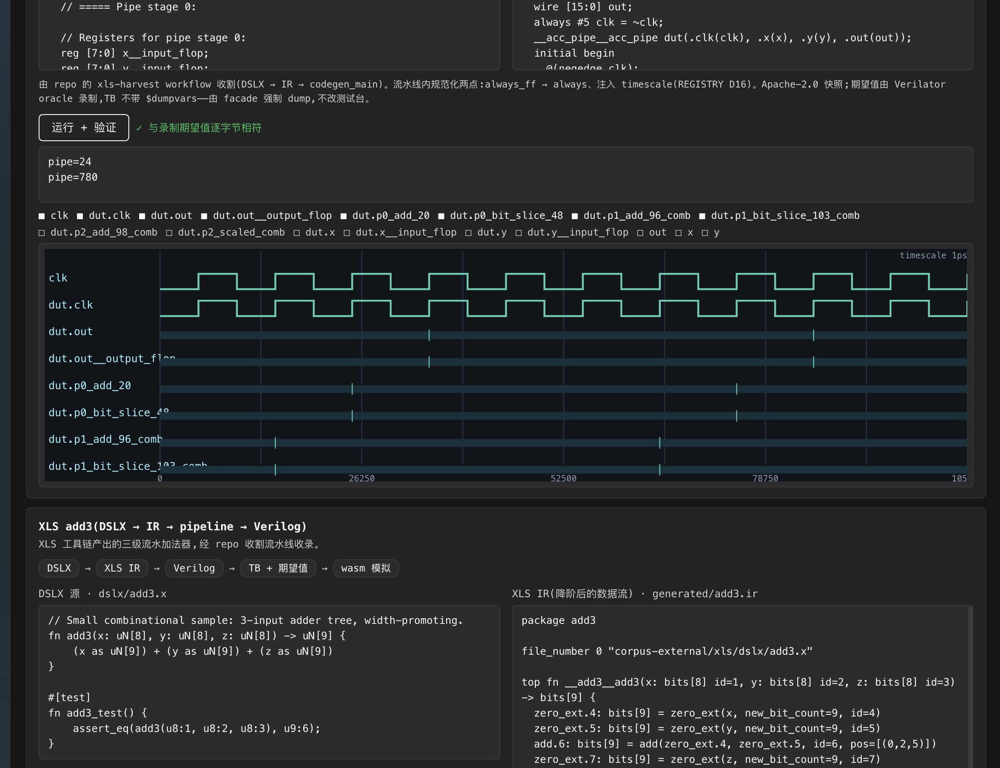
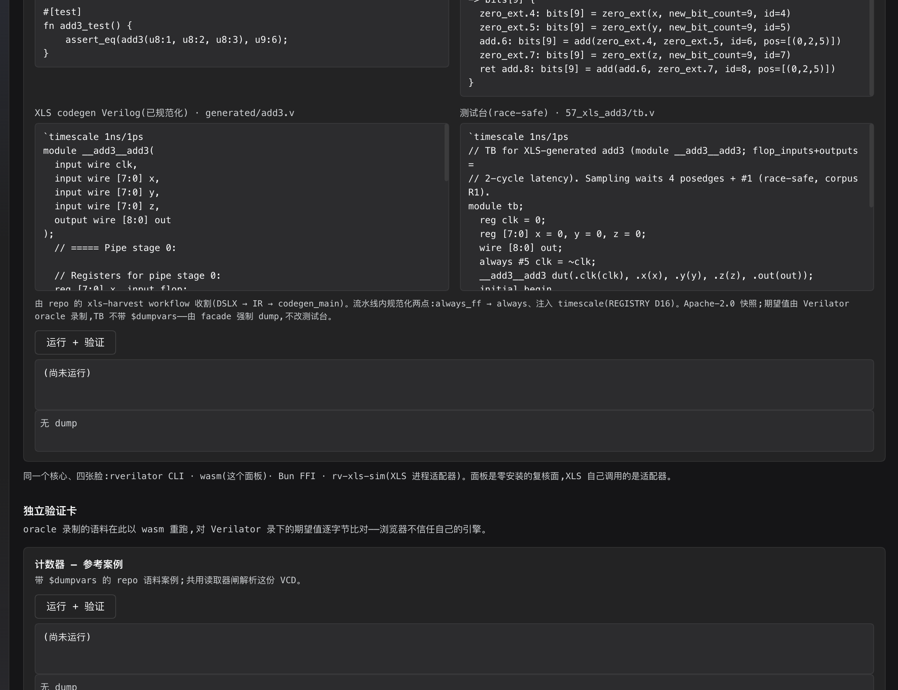

不是把 XLS 的驗證外包給我們，而是讓 XLS 的模擬器插槽、我們的 CLI、瀏覽器面板與語料閘， 全部落在同一份 Rust 核心與同一組 oracle 期望值上。這頁說明為什麼可行、三階段怎麼做， 以及 S1 已經落地並在真 app 裡驗過的部分。
先把「XLS 需要 Verilator」這個直覺拆掉——上游文件與原始碼都不支持它。
| 查證點 | 上游事實（google/xls @ main） | 對我們的含義 |
|---|---|---|
verilog_simulator.h |
純虛介面：Run(text, file_type, macros, includes) -> (stdout, stderr)，另有 RunSyntaxChecking。 |
「文字進、stdout/stderr 出」+ -D + -I = 我們的 CLI 已經具備的面。 |
simulators/ |
只有 iverilog_simulator.cc：寫暫存 top.v → iverilog -o → vvp → 收輸出。 |
沒有 verilator_simulator.cc；插槽是空的，先到先贏。 |
| Verilator 出現處 | 文件舉例、module_builder.cc 一行「Verilator 不喜歡陣列宣告與賦值同行」的註解。 |
是「範例」與「lint 遷就」，不是依賴。 |
| 已收編語料 | corpus-external/xls：DSLX、IR、codegen Verilog（Apache-2.0）；corpus/e2e/57_xls_add3、58_xls_acc_pipe：race-safe TB + Verilator 錄製期望。 |
「XLS 產物 → 我們的閘」這條路已經通了，缺的是把它變成可視、可重用、可被 XLS 呼叫。 |
VerilogSimulator 形狀的實作。我們要做的，是把同一個 Rust 核心接到那個插槽上，
並讓同一份核心同時服務 CLI、瀏覽器與 DSH 面板。
每一層都能獨立成立；後一層不擋前一層，但三層都到位才是「一起用」而不是「互相展示」。
XLS 產出的 DSLX / IR / Verilog 進快照；TB 與期望值進 e2e 語料；同一個 byte-diff 閘驗兩邊。
實作 XLS 的 VerilogSimulator 契約（Run / RunSyntaxChecking / macros / includes），讓 XLS 的測試直接跑在我們的引擎上。
rv-xls-sim（argv + JSON）+ 11 項契約測試vl-sim / vl-vcd 一份核心，四張臉：CLI、wasm、Bun FFI、XLS 適配器；新能力先落核心再露面（AGENTS §10.7）。
這三層刻意分開，因為它們的驗收方式不同：L1 靠 oracle byte-diff、L2 靠介面形狀契約、 L3 靠「同一份核心、不同入口得到同一結果」的等價測試。混在一起就會出現 「瀏覽器很漂亮，但 XLS 根本叫不動」的假完成。
左邊是上游的產生鏈，中間是驗證語料，右邊是我們唯一的核心與它對外的四個入口。
.x.ir.vtb.vexpected.stdout
面板不重寫引擎：它載入同一份 vl_wasm_bg.wasm，波形是同一支 vl-vcd 渲染器出的 SVG。
為什麼要「進程邊界」而不是直接把 XLS 原始碼拉進來編？XLS 是 Bazel/C++ 大樹，綁進去等於把
Apache-2.0 的上游編譯鏈變成我們的建置前提。已用穩定的 JSON/argv 協定對接；上游子類（cpp/xls/...）已對 pinned 真 header 編譯，
XLS 樹內 Bazel 連結已於 2026-10-26 在 CI 實跑綠(見 §risk)。我們的建置與授權邊界保持乾淨。
S2 把「剛好能跑」變成「形狀也對」：錯誤、巨集、include、exit code 都有明確歸屬，且每一格都有測試釘住。
XLS VerilogSimulator | 我們的等價物 | 現況 | 釘住的方式（contract test） |
|---|---|---|---|
Run(text, ".v", macros, includes) |
rverilator --binary / WasmSim / rv-xls-sim |
CLI ✅、wasm ✅、adapter ✅ | add3 / acc_pipe 的 stdout 與 oracle 期望 byte-equal（文字與 argv 兩條入口）；stdout 不得含 scratch 路徑。 |
RunSyntaxChecking(text, ...) |
--syntax-check |
✅ | 好設計：stdout / stderr 都空；壞設計：exit 1、stdout 空、stderr 含 diagnostics。 |
MacroDefinition |
-D NAME=VALUE |
✅ | `ifdef BIG 真的改變 stdout（big vs small），不是只被受理。 |
includes |
-I dir |
✅ | `include "defs.vh" 自 include 目錄解析，巨集值進 stdout（val=7）。 |
file_type = ".sv" |
V2005 範圍外 | 明確拒絕（milestone） | exit 1，stderr 同時含 SystemVerilog 與 milestone；禁靜默降級。 |
SimulationResult{stdout, stderr} |
兩個 stream | ✅ | 失敗：stdout 空、stderr 診斷；JSON 回應 round-trip（status/stdout/stderr/exit 型別正確）。 |
兩種呼叫形狀共用同一個請求模型與同一個核心：argv 給 shell／上游子程序，JSON 給 in-memory 文字（XLS 的 Run 就是這個形狀）。
# argv 形：stdout = 設計輸出，stderr = 診斷，exit code 表成敗 rv-xls-sim --file top.v -D WIDTH=8 -I ./inc rv-xls-sim --file top.v --syntax-check # JSON 形：stdin → stdout（未知鍵忽略，向前相容） { "text": "module tb; initial begin $display(\"q=%0d\", 8); $finish; end endmodule", "file_type": ".v", "defines": { "WIDTH": "8" }, "includes": ["./inc"], "syntax_only": false } → { "status": "ok", "stdout": "q=8\n", "stderr": "", "exit": 0 }
刻意不引入 serde：請求／回應是固定鍵的 JSON 子集，手寫遞迴下降解析器 + 單元測試
（跳脫、BMP／代理對、惡意輸入）就夠；錯誤一律 status: "error" + 非空 stderr，
不靠例外。完整契約（含分歧與非目標）見 docs/XLS-ADAPTER.md。
S1、S2、S3 已落地；XLS 樹內 Bazel 實跑已於 2026-10-26 在 xls-harvest workflow 的 in-tree job 綠（checkout google/xls at tag → overlay 子類 → bazel build //xls/simulation/simulators:rverilator_simulator，2171 actions 全綠；本機無 Bazel 不再是殘項——CI 就是 linux oracle）。殘=註冊進 verilog_simulators+live simulator run+上游 PR。
corpus-external/xls 與 corpus/e2e，產生 /rverilator-wasm/xls/manifest.json；新增案例是資料變更，不是改前端。$dumpvars：由 facade 的 force_dump 產生波形，不動收割下來的測試台。rv-xls-sim 適配器 + 契約測試crates/rv-xls-sim：argv 與 stdin-JSON 兩種入口，內部直接呼叫 vl_sim::USim（與 rverilator --binary 同一個統一引擎），沒有第二個子程序、沒有引擎邏輯複製。`include 與 $readmem 與真實檔案一致；scratch 路徑不進 stdout，目錄用完即刪。.sv 明確拒絕、JSON round-trip。src/json.rs 是帶單元測試的 JSON 子集（跳脫、代理對、惡意輸入）；未知鍵忽略，向前相容。docs/XLS-ADAPTER.md（協定 v1、stream/exit 契約、分歧與非目標）。cargo build 零警告；cargo test -p rv-xls-sim 21/21（10 unit + 11 contract）；regress.sh 新增「xls adapter」一行且全綠。crates/rv-xls-sim/cpp/xls/simulation/simulators/ 已有 rverilator_simulator.{h,cc} 與 drop-in BUILD：照 IcarusVerilogSimulator 的形狀寫 top.v＋VerilogInclude(text)、-D SIMULATION -D ASSERT_ON、exit→absl status、.sv→Unimplemented。scripts/xls-cpp-gate.sh 下載 pinned google/xls header、用 protoc 生成 op.pb.h 族、對真 header 編譯，再以本地 InvokeSubprocess double 跑 10 項 harness 檢查（add3 byte-exact、巨集、include、語法錯、.sv）。xls-harvest.yml 現在輸出可自我驗證的 artifact：manifest.json(tag+sha256)、generated/、dslx/、raw、LICENSE；CI 內先用 rv-xls-sim --syntax-check 過語法閘。scripts/xls_adopt.py 兩階段收編：先驗全部 sha256／拒收 syntax 失敗，再正規化寫入；竄改=整批拒絕，重跑 idempotent；刻意不生成 e2e（TB 人寫、期望 oracle 錄）。bazel test（本機無 Bazel，release 只有 linux-x64）、實際跑一次 GitHub Actions、上游 PR。bash scripts/xls-cpp-gate.sh 全綠（10/10 harness）；adopt 對正常/竄改/idempotent 三形都符合預期；in-tree Bazel 仍標 TODO。前三張是 2026-10-26 在 DSH Web 面板裡實際點擊後的畫面，不是 mock；後半是可用指令重跑的適配器契約。

fn add3，右邊是 IR 的 zero_ext／add，下面是 codegen Verilog 與 57_xls_add3/tb.v；出處段落寫明收割流程與兩項正規化。
add3=6 / add3=355，徽章「✓ 與錄製期望值逐位元組相符」；波形是 vl-vcd 的 SVG，訊號清單可切換。
pipe=24 / pipe=780，同樣 byte-exact；波形帶時間軸（10.5 萬時間單位），證明強制 dump 在長管線上也成立。| 檢查 | 指令 | 結果 |
|---|---|---|
| Host manifest 與檔案 allowlist | curl -s localhost:PORT/rverilator-wasm/xls/manifest.json | 200 JSON，兩個案例，forceDump: true，e2e 目錄正確 |
| DSLX / IR / Verilog / licence | curl -sI .../xls/dslx/add3.x 等 | 200，text/plain，no-store |
| 越界與副檔名 | .../xls/generated/../../Cargo.toml、.../top.sh | 403 |
| 面板（jsdom + 真 wasm） | NODE_PATH=... node test/smoke.mjs | 66 checks PASS，含四格內容、byte-exact、波形、四張臉註記 |
$ ./target/debug/rv-xls-sim corpus/e2e/57_xls_add3/add3.v corpus/e2e/57_xls_add3/tb.v add3=6 add3=355 $ printf '%s' '{"text":"module tb; initial begin $display(\"q=%0d\", 8); $finish; end endmodule\n"}' | ./target/debug/rv-xls-sim --json {"status":"ok","stdout":"q=8\n","stderr":"","exit":0} $ printf '%s' '{"text":"module tb; endmodule","file_type":".sv"}' | ./target/debug/rv-xls-sim --json {"status":"error","stdout":"","stderr":".sv (SystemVerilog) is out of scope: rverilator targets Verilog-2005; ... (milestone)\n","exit":1}
| 契約 | 結果 |
|---|---|
cargo test -p rv-xls-sim | 21/21（10 unit + 11 contract） |
| add3 / acc_pipe stdout | 與 expected.stdout byte-equal（文字與 argv 兩條入口都驗） |
| 巨集 / include | `ifdef BIG 改變 stdout；`include 自 -I 目錄解析 |
.sv / 語法錯 | exit 1、stdout 空、stderr 明確（SystemVerilog … milestone） |
regress.sh | 新增「xls adapter: add3 byte-exact + syntax + json + sv-refusal」一行 |
$ bash scripts/xls-cpp-gate.sh # 會下載 pinned google/xls header == upstream: 8ddae8b (v0.0.0-10898-g8ddae8bf4) == == syntax pass: real header + module initializer == == compile harness (local InvokeSubprocess double) == == run harness == PASS Run(add3) succeeds PASS Run(add3) stdout is byte-exact PASS Run(macros) applies -D BIG PASS Run(includes) writes VerilogInclude text PASS Run(.sv) is Unimplemented ... ALL CHECKS PASS $ python3 scripts/xls_adopt.py /tmp/xls-artifact --dest /tmp/snapshot acc_pipe: adopted generated/acc_pipe.v, generated/acc_pipe.ir, dslx/acc_pipe.x add3: adopted generated/add3.v, generated/add3.ir, dslx/add3.x adopted 2 case(s) from google/xls v0.0.0-test into /tmp/snapshot
| 契約 | 結果 |
|---|---|
| 子類對真 header | -fsyntax-only 通過（含 module initializer；pinned tag 的 FileType／VerilogInclude／MacroDefinition 全對位） |
| harness | 10/10（add3 byte-exact、巨集真的生效、include text 落檔、語法錯→status、.sv→Unimplemented） |
| artifact manifest | sha256 + tag + adapter syntax_check；manifest 寫在 artifact 根 |
| adopt | 正規化（always_ff→always、timescale 冪等）＋先驗後寫；竄改整批拒絕、dest 不建立 |
| ✅ 2026-10-26 | XLS Bazel 樹內連結：in-tree job 實跑綠（runs 40279782574；首跑 635s/2171 actions build completed successfully，產物實名 librverilator_simulator.lo 已回寫檢查）。上游測試=待上游 PR。 |

| 項目 | 風險 | 處置 |
|---|---|---|
.sv 檔案型別 |
XLS 某些 codegen 需要 SystemVerilog；我們是 V2005 範圍。 | 明確硬錯 + milestone 標記；不在適配器裡靜默改寫。 |
| timescale 正規化 | XLS 沒有 timescale 概念，直接餵檔會觸發 TIMESCALEMOD（REGISTRY D16）。 | 維持「收割管線內注入」的語料政策；引擎行為不因個案改變。 |
| stderr 措辭 | XLS 測試若斷言 iverilog 的錯誤文字，換引擎就會紅。 | 契約只保證「非空且含失敗原因」；逐字差異登記，不假裝等價。 |
$finish／exit code |
iverilog 面與 rverilator 面的結束語義不同。 | 適配器固定映射：正常結束 0、編譯/執行錯誤 1；$finish 橫幅留在 stdout。 |
| 瀏覽器 ≠ 上游 | 面板綠了不代表 XLS 的 C++ 呼叫端可用。 | L1 與 L2 分開驗收；S3 以上游測試實跑為準。 |
| XLS 樹內驗證 | 本機沒有 Bazel；XLS release 只提供 linux-x64，macOS arm64 不能直接執行。解法已落地=CI 當 linux oracle（workflow_dispatch 自助觸發、artifact 自帶授權、adopt 腳本本機驗收），樹內閘=in-tree job。 | 子類對真 header 編譯＋harness 實跑；in-tree bazel test 明標 TODO，不假裝已驗。 |
dsh-plugins/rverilator-wasm-playground/index.js | manifest 掃描、xls 路由、授權檔、403 邊界 |
.../client.js | XLS 橋接段、四格出處鏈、force_dump 執行、三語字典 |
.../test/smoke.mjs | 66 項檢查（Host + 註冊 + SSR + jsdom 真 wasm） |
crates/rv-xls-sim/ | 適配器（argv + JSON、JSON 子集、scratch、USim） |
crates/rv-xls-sim/tests/contract.rs | 11 項契約測試（oracle byte-equal、巨集、include、錯誤分流） |
docs/XLS-ADAPTER.md | 協定 v1、stream/exit 契約、分歧與非目標 |
crates/rv-xls-sim/cpp/ | XLS 子類 + BUILD + harness（對真 header 編譯） |
scripts/xls-cpp-gate.sh | 下載 pinned XLS header、編譯、跑 harness |
scripts/xls_harvest_manifest.py · xls_adopt.py | artifact manifest（sha256+syntax gate）與兩階段收編 |
.github/workflows/xls-harvest.yml | CI 產出可自我驗證 artifact |
docs/e2e-report/dsh-xls-bridge-*.png | 真 app 截圖三張 |
# 1) Host 契約（curl） curl -s localhost:49761/rverilator-wasm/xls/manifest.json # 2) 面板 smoke（需要 react/react-dom/jsdom） cd dsh-plugins/rverilator-wasm-playground NODE_PATH=/tmp/plugintest/node_modules node test/smoke.mjs # 3) S2 適配器契約 cargo test -p rv-xls-sim cargo build -p rv-xls-sim ./target/debug/rv-xls-sim corpus/e2e/57_xls_add3/add3.v corpus/e2e/57_xls_add3/tb.v # 4) 重新載入面板 # client.js 改動 → 重新整理頁面即可 # index.js 改動 → toggle 外掛列或重啟 app（Host 模組按 generation 快取）
延伸閱讀：docs/XLS-VERILATOR-STUDY.md（上游查證）、docs/DSLX-STUDY.md、
docs/XLS-ADAPTER.md（協定 v1）、docs/REGISTRY.md D16（timescale）、
.github/workflows/xls-harvest.yml（收割）。